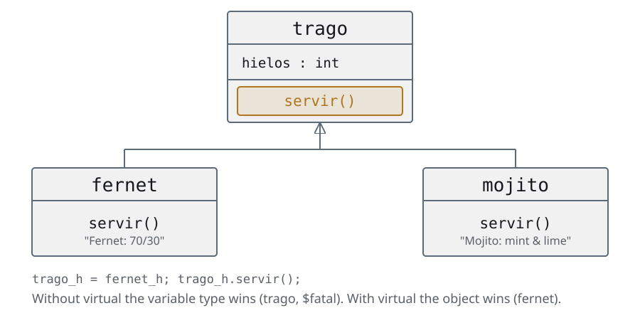
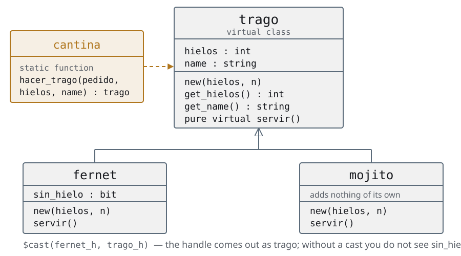
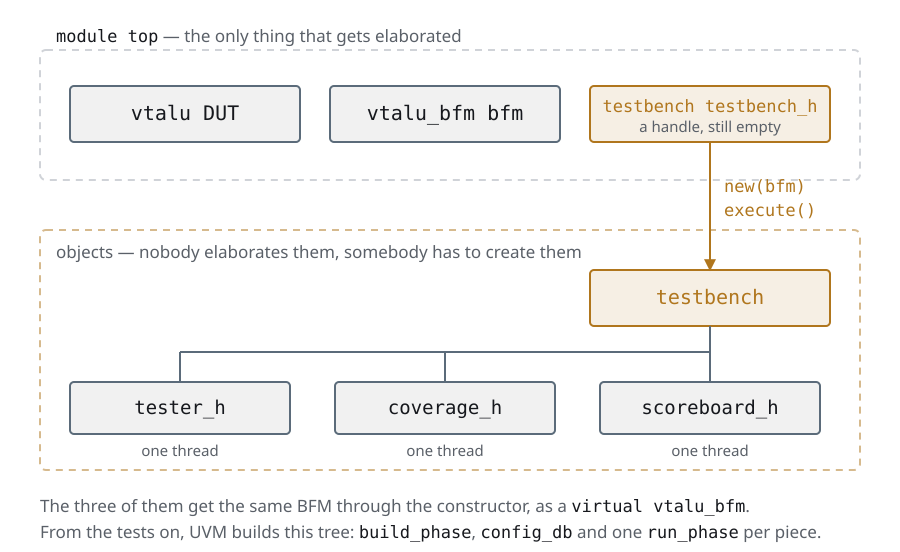

Day 2The OOP UVM takes for granted
The same slides as the deck, with the instructor notes inside the text and the complete code. If you are taking the course on your own, start here and keep the deck alongside for the reviews.
Agenda
Day 2 · ≈ 4 h · unit 3 · the OOP UVM takes for granted
- Classes and extensions
- Polymorphism
- Static variables and methods
- Parameterized classes
- The factory pattern
- A testbench without a single module
Classes and extensions
Why OOP in a testbench?
- The conventional testbench is a module: it gets elaborated once, it exists from
time 0until the$finish, and it is always the same one - A stimulus looks nothing like that: it shows up, it travels through the testbench, it gets compared and it gets thrown away. That is not a module, it is an object
- Modules = structure, they get elaborated. Classes = data and behaviour, they get created and destroyed while the simulation runs
- And it is not optional: UVM is a class library.
uvm_test,uvm_component,uvm_object. Without this, the rest of the course cannot be read
Here is the real wall of the course, and it is not UVM: it is OOP. Whoever arrives from RTL has never written a class, and from the tests on everything is classes. If the group comes from software, this unit goes fast and you gain time for day 3. If it comes from RTL, it is the unit where you spend whatever time is left over, even if you have to take it from somewhere else. The question that orders everything: does this exist all the time or does it show up and leave? The first is a module; the second, an object.
Classes and extensions
What a struct cannot do
code/u3/clases/structs.svtypedef struct {
int length;
int width;
} rectangle_struct;
typedef struct {int side;} square_struct;
module top_struct;
rectangle_struct rectangle_s;
square_struct square_s;
initial begin
rectangle_s.length = 50;
rectangle_s.width = 20;
$display("rectangle area: %0d", rectangle_s.length * rectangle_s.width);
square_s.side = 50;
$display("square area: %0d", square_s.side ** 2);
end
endmodule- The
structholds data and nothing else: the area calculation has to be written outside, and again in every place where it is needed square_structhas no relationship at all withrectangle_struct, even though a square is a particular case of a rectangle- It does not randomize itself, it does not compare itself, it does not print itself
It is worth starting by asking what is wrong with the struct, because the spontaneous
answer is "nothing" — and they are right: for holding three fields it works perfectly. The
course is not here to say the struct is wrong, it is here to say where it falls
short.
The three bullets are three different things and it is worth separating them. The first one
is cohesion: the data is here and the operation on the data is in another file,
so nothing forces them to agree. The second is inheritance: a
square is a rectangle and the language has no way of saying so, so it gets
copied and pasted. The third is the one that gets charged on day 5: a command_s does not
know how to randomize itself or compare itself against itself, and all of that has to be
written outside, once for every place that uses it.
The honest punchline, so that nobody leaves with a religious idea: the command_s of the
conventional testbench is a struct, it works, and it was fine while the
testbench was a module. What changes is the scale.
Classes and extensions
The first class: data, methods and constructor
code/u3/clases/rectangle_only.svclass rectangle;
int length;
int width;
function new(int l, int w);
length = l;
width = w;
endfunction
function int area;
return length * width;
endfunction
endclass : rectangle
module top_rectangle;
rectangle rectangle_h;
initial begin
rectangle_h = new(.l(50), .w(20));
$display("rectangle area: %0d", rectangle_h.area());
end
endmodule : top_rectangle- The class puts the data (
length,width) together with what gets done with it (area()). The area gets computed in a single place new()is the constructor: it runs once, when the object gets created.l(50)is argument passing by name. UVM uses it all the time
The comparison with the previous slide is the whole class: the same two fields,
plus a function that used to live loose. Worth pointing at area() and saying that that is
the entire difference — the data and what gets done with the data travel together.
new() is worth presenting without mystery: it is an ordinary function, with a
reserved name, that the simulator calls on its own when the object gets created. It returns
the handle. It does nothing magic and there is no destructor on the other side.
Passing by name looks cosmetic and it is not: when the constructor has
five arguments —and uvm_component's has two that are always the same—
.l(50) is what makes the call readable without going to look up the signature.
The whole of code/ in the course is written that way.
And the question to leave hanging, the one the next slide answers: if I
declare rectangle r; and I never call new(), how many objects are there?
Classes and extensions
A handle and an object are not the same thing
rectangle rectangle_h; // 1. a HANDLE. No object yet: it is null
rectangle_h = new(.l(50), .w(20)); // 2. new() creates the OBJECT and returns its handle
- Declaring a handle creates nothing. Until the
new()it isnull, and using it there blows up at simulation time, not at compile time - The handle looks like a pointer, but it takes no arithmetic: there is no
h + 1 - The memory of a
structthe simulator reserves the moment it sees it; that of an object, only at thenew() - And there is no
free(): when no handle is left pointing at it, the object gets collected on its own
The null pointer is THE mistake of the first week, and Verilator's message does not
help: it tells you that you dereferenced null, not where the new() was missing.
It is worth writing the two lines on the board and asking how many objects there
are after each one. The answer is zero and one.
This comes back twice more in the course: in the class hierarchies, when obj1_h = obj2_h
copies the handle and not the object; and in the tests, when the virtual interface that was
not read from the config_db is left at null.
Classes and extensions
Extending: extends and super
code/u3/clases/classes.sv · #rectangle-and-squareclass rectangle;
// Data members
int length;
int width;
function new(int l, int w);
length = l;
width = w;
endfunction
function int area();
return length * width;
endfunction
endclass
// Extendiendo Clases!
class square extends rectangle;
// Override Constructor
function new(int side);
//super: llamado a metodo de padre
super.new(.l(side), .w(side));
endfunction
endclassel archivo entero, 48 líneas
// Memory Management: creating an object and passing it around the TB means
// allocating memory and sharing it between threads
// The simulator treats a class differently from a struct
// It allocates the memory of a struct as soon as it sees it,
// while for classes that has to be done with new()
class rectangle;
// Data members
int length;
int width;
function new(int l, int w);
length = l;
width = w;
endfunction
function int area();
return length * width;
endfunction
endclass
// Extendiendo Clases!
class square extends rectangle;
// Override Constructor
function new(int side);
//super: llamado a metodo de padre
super.new(.l(side), .w(side));
endfunction
endclass
module top_class;
//Handle: like a pointer, but arithmetic on it is not allowed
rectangle rectangle_h;
square square_h;
initial begin
rectangle_h = new(.l(50), .w(20));
$display("rectangle area: %0d", rectangle_h.area());
square_h = new(.side(50));
$display("square area: %0d", square_h.area());
// Since a square is a particular case of a rectangle:
// can rectangle_h point to a square? Yes, polymorphism
end
endmodulesquare extends rectangleinheritslength,widthandarea()without copying a single line. A square is a rectangle with a constraint, and the code says it that way- The child's constructor calls
super.new(): the top part of the object also has to be built, and it goes first - Extending is not copying: if tomorrow
area()changes, it changes for both
The constructor order is the first thing to nail down, because it is mandatory and
it fails ugly: super.new() goes before anything else of the child. The reason
is physical — the object is a single one, and the part the base class contributes has to
be built before touching anything. If you forget it, SystemVerilog calls it on its own
when the base constructor takes no arguments, and it does not compile when it does
take them. On day 3, uvm_component's takes them.
The last bullet is the whole argument of the unit and it is worth saying with an
example: if area() changes tomorrow, in the struct version you have to remember
both places; here it changes in one and the other finds out on its own. That "finds out
on its own" is what inheritance buys you, and it is the same promise the env makes
to the tests on day 6.
And the warning about where this is heading, so that the word does not turn up cold on the
next slide: inheriting lets the child use what belongs to the parent. What still cannot
be done is for the parent to call the child's version — that is polymorphism, and it is the
section that follows.
Classes and extensions
Where all of this comes back
| What you have just seen | What it is called in UVM |
|---|---|
| class with data and methods | uvm_object — the transactions of day 5 |
| class that also lives in the TB tree | uvm_component — driver, monitor, scoreboard |
new() |
the constructor, with name (and parent if it is a component) |
extends |
every test, every tester, every agent of the course |
super.new() |
the mandatory first line of every UVM constructor |
- One piece is missing: storing a
squareobject in arectanglevariable. That is the unit that follows
Close with the table and not with the example: the student has to leave knowing that this was not a programming detour, it was the vocabulary of the rest of the course. The last bullet leaves the door open to polymorphism, which is the only thing missing before a factory can be read.
Classes and extensions
Summary of the unit
- Modules = structure, they get elaborated once and live forever. Classes = data and behaviour, they get created and thrown away during simulation
- A stimulus looks like the second, not the first. That is why the testbench moves to classes — and that is why UVM is a class library
- A
structholds data and nothing else. A class puts the data together with what gets done with it, and on top of that it can be extended - Declaring a handle creates nothing. Until the
new()it isnull, and using it there is the mistake that repeats the most in the whole week - There is no
free(): when no handle is left pointing at the object, the garbage collector takes it away - Extending a class is adding to it or redefining things without touching the original. It is the base of everything that comes
Closing of the unit that opens the most abstract day of the course. It is worth anchoring
it with the concrete promise: all of this exists so that the day 1 testbench can be
written without a single module, and so that in the env the stimulus can be changed
without touching the env.
The null deserves one more pass because it comes back three times: here, in the tests
with the virtual interface that was not read from the config_db, and in the class
hierarchies when obj1_h = obj2_h copies the handle and not the object.
Polymorphism
A trago variable, a fernet object: which servir() runs?

- A
fernetis atrago, so storing it in atragovariable compiles and is legal - The question is the other one: when you call the method through that variable, does SystemVerilog look at the type of the variable or at the type of the object?
- The default answer is the one you do not want, and the word that changes it is a single one
It is the concept that holds up everything that comes: the factory, the overrides, the
transactions. Whoever gets lost here loses the rest of the course, so it is not worth
moving on until everybody sees why the variable can be of the base class.
It is worth taking a vote before showing the code: "what does it print?". Half the
room says "Fernet", and seeing that they are wrong is what fixes the concept.
And warn about it before they ask: in SystemVerilog virtual is
overloaded — virtual method, virtual class and virtual interface are three different
things. Here it is the first one.
Polymorphism
The three classes: a trago that does not know how to serve itself
code/u3/polimorfismo/01-sin-virtual/not_virtual.sv · #three-classesclass trago;
int hielos = -1;
function new(int a);
hielos = a;
endfunction : new
function void servir();
$fatal(1, "A generic trago cannot be served: order a real one.");
endfunction : servir
endclass : trago
class fernet extends trago;
function new(int hielos);
super.new(hielos);
endfunction : new
function void servir();
$display("Fernet: 70/30, and the coke last");
endfunction : servir
endclass : fernetel archivo entero, 66 líneas
// Basic polymorphism, WITHOUT virtual: the case that fails. See the polymorphism section.
class trago;
int hielos = -1;
function new(int a);
hielos = a;
endfunction : new
function void servir();
$fatal(1, "A generic trago cannot be served: order a real one.");
endfunction : servir
endclass : trago
class fernet extends trago;
function new(int hielos);
super.new(hielos);
endfunction : new
function void servir();
$display("Fernet: 70/30, and the coke last");
endfunction : servir
endclass : fernet
class mojito extends trago;
function new(int hielos);
super.new(hielos);
endfunction : new
function void servir();
$display("Mojito: mint, lime and crushed ice");
endfunction : servir
endclass : mojito
module top;
initial begin
fernet fernet_h;
mojito mojito_h;
trago trago_h;
fernet_h = new(15);
fernet_h.servir();
$display("The fernet has %0d ice cubes", fernet_h.hielos);
mojito_h = new(1);
mojito_h.servir();
$display("The mojito has %0d ice cubes", mojito_h.hielos);
// The variable is trago, the object is fernet.
trago_h = fernet_h;
trago_h.servir(); // ** Fatal: A generic trago cannot be served
$display("The trago has %0d ice cubes", trago_h.hielos);
trago_h = mojito_h;
trago_h.servir();
$display("The trago has %0d ice cubes", trago_h.hielos);
end // initial begin
endmodule : toptragodefinesservir()with a$fatal: the base class does not know what it gets served with, and it says so loudlyfernetandmojitoextendtragoand redefineservir(), each one with its ownmojito—which does not fit on the screen— is the same asfernet, with another$display
The $fatal in the base class is a pattern you see a lot and that in two slides
we are going to replace with something better: if the method cannot be implemented here, the
right thing is not to explode in simulation, it is not to let it compile.
That the three classes have a method with the same name and the same signature is what
makes everything that follows possible. Now it remains to decide which one runs, and that
is not yet said anywhere in the code.
The whole file is in code/u3/polimorfismo/01-sin-virtual/not_virtual.sv.
Polymorphism
Without virtual the variable rules, and that breaks
code/u3/polimorfismo/01-sin-virtual/not_virtual.sv · #the-calls fernet_h = new(15);
fernet_h.servir();
$display("The fernet has %0d ice cubes", fernet_h.hielos);
mojito_h = new(1);
mojito_h.servir();
$display("The mojito has %0d ice cubes", mojito_h.hielos);
// The variable is trago, the object is fernet.
trago_h = fernet_h;
trago_h.servir(); // ** Fatal: A generic trago cannot be served
$display("The trago has %0d ice cubes", trago_h.hielos);
trago_h = mojito_h;
trago_h.servir();
$display("The trago has %0d ice cubes", trago_h.hielos);el archivo entero, 66 líneas
// Basic polymorphism, WITHOUT virtual: the case that fails. See the polymorphism section.
class trago;
int hielos = -1;
function new(int a);
hielos = a;
endfunction : new
function void servir();
$fatal(1, "A generic trago cannot be served: order a real one.");
endfunction : servir
endclass : trago
class fernet extends trago;
function new(int hielos);
super.new(hielos);
endfunction : new
function void servir();
$display("Fernet: 70/30, and the coke last");
endfunction : servir
endclass : fernet
class mojito extends trago;
function new(int hielos);
super.new(hielos);
endfunction : new
function void servir();
$display("Mojito: mint, lime and crushed ice");
endfunction : servir
endclass : mojito
module top;
initial begin
fernet fernet_h;
mojito mojito_h;
trago trago_h;
fernet_h = new(15);
fernet_h.servir();
$display("The fernet has %0d ice cubes", fernet_h.hielos);
mojito_h = new(1);
mojito_h.servir();
$display("The mojito has %0d ice cubes", mojito_h.hielos);
// The variable is trago, the object is fernet.
trago_h = fernet_h;
trago_h.servir(); // ** Fatal: A generic trago cannot be served
$display("The trago has %0d ice cubes", trago_h.hielos);
trago_h = mojito_h;
trago_h.servir();
$display("The trago has %0d ice cubes", trago_h.hielos);
end // initial begin
endmodule : top- The first two calls work: the variable
fernet_his of typefernetand so is the object - The third one explodes.
trago_hpoints at afernet, but since the method is not virtual, SystemVerilog resolves at compile time by the type of the variable, and callstrago'sservir() - It is called static binding: the decision of which code to run is already taken before the object exists
This is worth running: bash code/u3/polimorfismo/01-sin-virtual/run.sh. The example
ends in $fatal on purpose, and the run.sh gives PASS precisely when that
message shows up.
The question that always comes: "and why does hielos come out right?". Because
fields are never virtual: the variable sees the fields of its own type, and
hielos is in trago. Methods are the only thing that can be resolved by
object, and only if you ask for it.
Polymorphism
Virtual methods: one word, and now the object rules
code/u3/polimorfismo/02-virtual/virtual.sv · #trago.servir virtual function void servir();
$fatal(1, "A generic trago cannot be served: order a real one.");
endfunction : servirel archivo entero, 67 líneas
// Identical to 01-sin-virtual except for ONE word: trago's servir() is
// now virtual. See the polymorphism section.
class trago;
int hielos = -1;
function new(int a);
hielos = a;
endfunction : new
virtual function void servir();
$fatal(1, "A generic trago cannot be served: order a real one.");
endfunction : servir
endclass : trago
class fernet extends trago;
function new(int hielos);
super.new(hielos);
endfunction : new
function void servir();
$display("Fernet: 70/30, and the coke last");
endfunction : servir
endclass : fernet
class mojito extends trago;
function new(int hielos);
super.new(hielos);
endfunction : new
function void servir();
$display("Mojito: mint, lime and crushed ice");
endfunction : servir
endclass : mojito
module top;
initial begin
fernet fernet_h;
mojito mojito_h;
trago trago_h;
fernet_h = new(15);
fernet_h.servir();
$display("The fernet has %0d ice cubes", fernet_h.hielos);
mojito_h = new(1);
mojito_h.servir();
$display("The mojito has %0d ice cubes", mojito_h.hielos);
trago_h = fernet_h;
trago_h.servir();
$display("The trago has %0d ice cubes", trago_h.hielos);
trago_h = mojito_h;
trago_h.servir();
$display("The trago has %0d ice cubes", trago_h.hielos);
end // initial begin
endmodule : top- It is the only difference between
01-sin-virtualand02-virtual: the keywordvirtualon the method of the base class - With that the call gets resolved at simulation time, looking at the object inside the variable — dynamic binding
trago_h.servir()now serves a fernet or a mojito, without whoever wrote that line knowing which one they are going to get- That is the whole idea: whoever uses the object stops being the one who picks the type
Worth running the two examples one after the other and showing the diff: one word.
A detail that always gets asked: fernet and mojito do not write virtual
on their servir(), and they are virtual all the same. Once the method is virtual in
the base, it is virtual for all of its descendants. Writing it anyway does no harm and plenty
of people do it out of tidiness.
The rule of thumb for the rest of the course: in verification, every method you might
want to redefine goes virtual. UVM does it that way — build_phase,
run_phase, do_copy, do_compare are all virtual, and that is why the override
of the env works.
The cost exists and it is real —a method table and an indirect jump— but in a
testbench you are never going to measure it. In synthesizable RTL there are no classes, so
the discussion does not apply.
Polymorphism
Abstract classes: moving the error to compile time
- The
$fataloftragofinds out late: it compiles, it runs, and it explodes in the middle of the simulation. In an overnight regression that is a lost run - SystemVerilog allows declaring an abstract class —
virtual class—: it only serves as a base, it cannot be instantiated - Inside it can declare pure virtual methods: methods with no body
- Extending the class forces you to redefine them. If not, it is a compile error
- The error did not go away: it moved to a moment where it comes out cheap
This is the slide to leave clear, because the criterion repeats through the whole
course: the sooner it fails, the better. Compile time better than simulation,
simulation better than silicon.
In verification a compile error is good news: the overnight regression
does not get lost, and whoever broke something finds out in a minute.
Where it is going to show up again: uvm_object and uvm_component are declared
virtual class in the library, so they are abstract by right. What `uvm_component_utils
does **not** do is force you to implement anything: the other way round, it *provides*
get_type_name() and the registry's type_id. The real pure virtual in UVM is
uvm_subscriber::write(), which you are going to have to write no matter what on day 4.
And in the day 2 exercise, the base class of the testbench.
Polymorphism
pure virtual: the same example, with no $fatal possible
code/u3/polimorfismo/03-virtual-pura/pure_virtual.sv · #trago// Abstract class: it only works as a base, it cannot be instantiated.
virtual class trago;
int hielos = -1;
function new(int a);
hielos = a;
endfunction : new
// pure virtual: no body. Extending it forces you to redefine it.
pure virtual function void servir();
endclass : tragoel archivo entero, 67 líneas
// Abstract class: it only works as a base, it cannot be instantiated.
virtual class trago;
int hielos = -1;
function new(int a);
hielos = a;
endfunction : new
// pure virtual: no body. Extending it forces you to redefine it.
pure virtual function void servir();
endclass : trago
class fernet extends trago;
function new(int hielos);
super.new(hielos);
endfunction : new
function void servir();
$display("Fernet: 70/30, and the coke last");
endfunction : servir
endclass : fernet
class mojito extends trago;
function new(int hielos);
super.new(hielos);
endfunction : new
// Deleting this override does NOT compile -- which is exactly the point.
function void servir();
$display("Mojito: mint, lime and crushed ice");
endfunction : servir
endclass : mojito
module top;
initial begin
fernet fernet_h;
mojito mojito_h;
trago trago_h;
// trago_h = new(3); <- does not compile: trago is abstract
fernet_h = new(15);
fernet_h.servir();
$display("The fernet has %0d ice cubes", fernet_h.hielos);
mojito_h = new(1);
mojito_h.servir();
$display("The mojito has %0d ice cubes", mojito_h.hielos);
trago_h = fernet_h;
trago_h.servir();
$display("The trago has %0d ice cubes", trago_h.hielos);
trago_h = mojito_h;
trago_h.servir();
$display("The trago has %0d ice cubes", trago_h.hielos);
end // initial begin
endmodule : topvirtual class tragono longer has aservir()that explodes: it has no body, and that is why there is nothing that can run wrong- The commented-out line of the
top—trago_h = new(3)— does not compile: an abstract class does not get instantiated - If you delete
mojito's override, the compiler says "Class 'mojito' extends 'trago' but is missing implementation for 'servir'" and that is the end of it
The point is not the $fatal, it is when you find out: without an abstract class it
explodes in the middle of the simulation, with pure virtual it does not compile.
Worth doing live: comment out mojito's servir() and compile. The
compiler message is the one that teaches.
And the hook forward: the factory uses this to create, and the env for the
overrides. What today is a fernet and a mojito, tomorrow is going to be a
base_tester and the testers that extend it — same mechanics, another vocabulary.
Polymorphism
Summary of the unit
- A
fernetis atrago, so it fits in atragovariable. The question is what code runs when you call the method through that variable - Without
virtualthe variable rules (static binding): it is decided at compile time, and the derived class is left ignored - With
virtualthe object rules: it gets resolved during simulation, looking at what is inside. It is a single word and it changes everything - The underlying idea, the one that comes back in every section that follows: whoever uses the object stops being the one who picks the type
- An abstract class (
virtual class,pure virtual) moves the error from simulation to compile time: it cannot be instantiated by accident - In SystemVerilog
virtualis overloaded: virtual method, virtual class and virtual interface are three different things
It is the unit that unlocks the next half of the course, and it is worth saying so:
without polymorphism there is no factory, there is no uvm_component that can serve as a
base, and there is no override. Everything else is plumbing.
Forgetting virtual is also the trap of the day 2 exercise —get_op()
is declared without virtual on purpose—, so if somebody asks about it here,
do not give it away: it is understood much better by suffering it.
Static variables
The global variable you can actually defend
- In a testbench there is always something there is only one of: the error counter, the list of in-flight transactions, the handle to the configuration
- The easy answer is a global variable, and it is the one nobody can debug afterwards: you do not know who wrote it, or from where, or when
staticis the same idea with a surname. The variable lives in the class, not in the object, and to touch it you have to name the class:bandeja_de_fernet::vasos- That
::is the whole argument. The day the value looks odd, a grep tells you exactly who put it there - And it is not a loose OOP topic: the factory and the
uvm_config_dbare the two most important static variables of a UVM testbench
The question that orders the unit: what is there only one of in a testbench? The
factory, the configuration database, the error counter. All of that in UVM
is static, and that is why you write uvm_config_db#(T)::set(...) with a double
colon and without instantiating anything.
And the second half, which is the one you take to work: static solves the
"where it lives", not the "who touches it". That one is solved by protected plus access
methods, which is the third slide. A public static is a global variable
with a longer prefix.
Static variables
bandeja_de_fernethas no methods and no constructor: it is a class that exists only to be the place where the queue lives- Nobody instantiates it. It gets named with the
::operator, which tells the compiler "look this variable up in the namespace of that class" - And there is the advantage over the global:
bandeja_de_fernet::vasossays where it is declared. A loosevasosdoes not
code/u3/estaticas/01-variables/static_variables.sv · #tray-and-topclass bandeja_de_fernet;
//Queue static
static fernet vasos[$];
endclass : bandeja_de_fernet
module top;
initial begin
fernet fernet_h;
fernet_h = new(2, "the one at table 7");
// :: operator
//----------------
// The variable in the bandeja_de_fernet class is reached by
// naming the class and putting the :: operator before the name
// That tells the compiler we want a static variable inside
// the namespace of the class
bandeja_de_fernet::vasos.push_back(fernet_h);
fernet_h = new(3, "the one at table 4");
bandeja_de_fernet::vasos.push_back(fernet_h);
fernet_h = new(15, "the one at the bar");
// class::static_variable. You know right away where it is declared
bandeja_de_fernet::vasos.push_back(fernet_h);
$display("Fernets on the tray:");
foreach (bandeja_de_fernet::vasos[i]) $display(bandeja_de_fernet::vasos[i].get_name());
end
endmodule : topel archivo entero, 72 líneas
// Static variables
virtual class trago;
protected int hielos = -1;
function new(int hielos);
set_hielos(hielos);
endfunction : new
function void set_hielos(int a);
hielos = a;
endfunction : set_hielos
function int get_hielos();
if (hielos == -1) $fatal(1, "You didn't set the hielos.");
else return hielos;
endfunction : get_hielos
pure virtual function void servir();
endclass : trago
class fernet extends trago;
protected string name;
function new(int hielos, string n);
super.new(hielos);
name = n;
endfunction : new
function void servir();
$display("%s: 70/30, and the coke last", get_name());
endfunction : servir
function string get_name();
return name;
endfunction : get_name
endclass : fernet
// Static Variable to handle global var
// There is only one copy of a static variable in memory,
// no matter how many instances of the class exist
// They are global variables created in a controlled way
class bandeja_de_fernet;
//Queue static
static fernet vasos[$];
endclass : bandeja_de_fernet
module top;
initial begin
fernet fernet_h;
fernet_h = new(2, "the one at table 7");
// :: operator
//----------------
// The variable in the bandeja_de_fernet class is reached by
// naming the class and putting the :: operator before the name
// That tells the compiler we want a static variable inside
// the namespace of the class
bandeja_de_fernet::vasos.push_back(fernet_h);
fernet_h = new(3, "the one at table 4");
bandeja_de_fernet::vasos.push_back(fernet_h);
fernet_h = new(15, "the one at the bar");
// class::static_variable. You know right away where it is declared
bandeja_de_fernet::vasos.push_back(fernet_h);
$display("Fernets on the tray:");
foreach (bandeja_de_fernet::vasos[i]) $display(bandeja_de_fernet::vasos[i].get_name());
end
endmodule : topQuick translation: static is the global variable you can actually defend in a code review. It lives in the class, not in the object. The second slide shows why it has to be encapsulated with static methods: if you leave it public, the day you swap the queue for another structure you have to touch the whole testbench.
Static variables
- There is a single copy in memory, no matter how many objects get instantiated
- And it exists even if none gets instantiated: the
staticdoes not wait for thenew()
code/u3/estaticas/01-variables/ejemplo2.svclass pepe;
static int cant;
int val = -1;
function new(int a);
// Static Variable
cant++;
val = a;
endfunction : new
endclass : pepe
//----------------------------------------
module top;
initial begin
pepe pepe1_h, pepe2_h;
pepe1_h = new(10);
pepe2_h = new(254654);
$display("PEPE1 VAL = %0d", pepe1_h.val);
$display("PEPE2 VAL = %0d", pepe2_h.val);
// There is only one copy of a static variable in memory,
// no matter how many instances of the class exist
$display("NUMBER OF PEPES = %0d", pepe::cant);
end
endmodule : topAnd what about encapsulation?
pepe::cant counts how many objects got created, and the detail to point out is
that the counter exists even if there is not one object. A static does not
wait for the new(): it is there from the moment the simulation starts. That is why it
works for counting instances, and that is why it cannot be initialized with anything that
depends on an object.
A good question to throw out: if cant gets incremented in the constructor, what happens
if somebody extends pepe and forgets the super.new()? It does not count. It is the same
topic as classes and extensions seen from another side.
The question on the slide is on purpose: cant is public, and anybody in the
testbench can write it. Leaving that discomfort hanging in the air for a while is what
makes the next slide make sense.
Static variables
Static methods
- In the two previous examples the queue was out in the open, so the day it gets swapped for another structure you have to go and fix the whole testbench
- The version that survives a code review is two words: the variable
protected, and static access methods that are the only door - It is the same thing UVM does with the factory: nobody touches the type dictionary, you
ask it with
type_id::create()
code/u3/estaticas/02-metodos/static_methods.sv · #tray-and-topclass bandeja_de_fernet;
protected static fernet vasos[$];
static function void bandeja_fernet(fernet l);
vasos.push_back(l);
endfunction : bandeja_fernet
static function void lista_fernets();
$display("Fernets on the tray:");
foreach (vasos[i]) $display(vasos[i].get_name());
endfunction : lista_fernets
endclass : bandeja_de_fernet
module top;
initial begin
fernet fernet_h;
fernet_h = new(2, "the one at table 7");
bandeja_de_fernet::bandeja_fernet(fernet_h);
fernet_h = new(3, "the one at table 4");
bandeja_de_fernet::bandeja_fernet(fernet_h);
fernet_h = new(15, "the one at the bar");
bandeja_de_fernet::bandeja_fernet(fernet_h);
bandeja_de_fernet::lista_fernets();
end
endmodule : topel archivo entero, 69 líneas
// Static methods
virtual class trago;
protected int hielos = -1;
function new(int hielos);
set_hielos(hielos);
endfunction : new
function void set_hielos(int a);
hielos = a;
endfunction : set_hielos
function int get_hielos();
if (hielos == -1) $fatal(1, "You didn't set the hielos.");
else return hielos;
endfunction : get_hielos
pure virtual function void servir();
endclass : trago
class fernet extends trago;
protected string name;
function new(int hielos, string n);
super.new(hielos);
name = n;
endfunction : new
function void servir();
$display("%s: 70/30, and the coke last", get_name());
endfunction : servir
function string get_name();
return name;
endfunction : get_name
endclass : fernet
class bandeja_de_fernet;
protected static fernet vasos[$];
static function void bandeja_fernet(fernet l);
vasos.push_back(l);
endfunction : bandeja_fernet
static function void lista_fernets();
$display("Fernets on the tray:");
foreach (vasos[i]) $display(vasos[i].get_name());
endfunction : lista_fernets
endclass : bandeja_de_fernet
module top;
initial begin
fernet fernet_h;
fernet_h = new(2, "the one at table 7");
bandeja_de_fernet::bandeja_fernet(fernet_h);
fernet_h = new(3, "the one at table 4");
bandeja_de_fernet::bandeja_fernet(fernet_h);
fernet_h = new(15, "the one at the bar");
bandeja_de_fernet::bandeja_fernet(fernet_h);
bandeja_de_fernet::lista_fernets();
end
endmodule : topThe difference between the two versions is two words —protected in front
of the queue and static function on the accessors— and it changes who can break what.
In the first one, any line of the testbench can push_back onto the
queue; in this one, only bandeja_fernet().
The argument is not purism: it is that now vasos can be swapped for an associative
array, for a uvm_tlm_fifo or for whatever, without going out to fix the whole
testbench. Encapsulating is being able to change your mind later.
A syntax detail that confuses: a static method cannot touch
instance variables, only static ones. It makes sense —it gets called without an object,
so there is no this—, but the simulator's error message does not put it that way.
And the hook: UVM's type_id::create(), which they are going to write a hundred times
from the env on, is exactly this — a static access method to a static
structure.
Static variables
Summary of the unit
staticis the global variable you can actually defend: it lives in the class, not in the object, and to touch it you have to name the class with::- That
::is the whole argument. The day the value looks odd, agreptells you exactly who put it there - There is a single copy no matter how many objects you instantiate, and it exists
even if you instantiate none: it does not wait for the
new() staticsolves where it lives, not who touches it. That one is solved byprotectedplus static access methods- A public
staticis a global variable with a longer prefix - And it is not a loose OOP topic: the factory and the
uvm_config_dbare the two most important static variables of a UVM testbench
The hook worth leaving served: uvm_config_db#(T)::set(...) gets written
with a double colon and without instantiating anything, and now they know why. Same for
type_id::create(), which they are going to write a hundred times from the env on — it is
exactly a static access method to a static structure.
The question that orders the unit and works as a review: what is there only one of in a
testbench? The factory, the configuration database, the error counter.
All of that is static, and not by accident.
Parameterized classes
It is not a class: it is a mould
- The
bandeja_de_fernetof the previous section works for fernets. For mojitos you have to write another one just like it, with one word changed - You already solved that in RTL and you do not call it OOP: a FIFO does not get copied for
every data width, it gets parameterized.
#(.awidth(8), .dwidth(16)) - A parameterized class is the same thing, with types instead of numbers:
bandeja #(fernet)andbandeja #(mojito) - And there is a consequence that surprises: every different
#(...)is a different class, generated at compile time. They share nothing, not even thestatic - Why it matters: every
#(...)you see in the rest of the course is this.uvm_analysis_port #(T),uvm_subscriber #(T),uvm_sequence #(T)
Starting from Verilog's parameter is deliberate: the RTL student already knows how to
parameterize, only with widths. Here the parameter is a type, and the rest is
the same.
What has to be left crystal clear before moving on is the third bullet, because
it is question 6 of the review and because it is the base of all of UVM:
bandeja#(fernet) and bandeja#(mojito) are not the same class with a
different field. SystemVerilog generates a whole class for every combination of
parameters, at compile time. That is why each one has its own static queue.
The short way of saying it: the parameterized class is not a class, it is the recipe
for manufacturing classes. The class appears when you write the #(...).
And a limit worth naming now so that it does not surprise them: since it gets
resolved at compile time, the type has to be known there. You cannot pick the
parameter at runtime. Picking at runtime is what the factory solves, which is the
unit that follows.
Parameterized classes
- Before the new syntax, the parameter you already know: a RAM that does not get
copied for every width, it gets instantiated with
#(.awidth(8), .dwidth(16)) - Every instantiation with different parameters produces different hardware, and nobody argues about it
- Parameterized class definitions are that same thing on the software side, with one difference: the parameter can be a type
code/u3/parametricas/01-memoria/pres-ch8.svmodule RAM #(
awidth,
dwidth
) (
input wire [awidth-1:0] address,
inout wire [dwidth-1:0] data,
input we
);
initial $display("awidth: %0d dwidth %0d", awidth, dwidth);
// code to implement RAM
//...
endmodule // RAM
module top;
wire [ 7:0] address;
wire [15:0] data;
wire write_enable;
RAM #(
.awidth(8),
.dwidth(16)
) my_ram (
address,
data,
write_enable
);
endmodule // topIt is worth saying what we are going to use them for, otherwise it looks like a loose OOP
topic: uvm_analysis_port#(T), uvm_subscriber#(T), uvm_tlm_fifo#(T). Every #(...)
that shows up in the rest of the course is this.
Parameterized classes
- Version with static methods: the tray does not get instantiated, you ask it with
:: - The queue is
staticand even so there are two:bandeja#(fernet)andbandeja#(mojito)are two different classes, each one with its own
code/u3/parametricas/02-estatica/bandejas.sv · #tray-and-topclass bandeja #(
type T
);
protected static T vasos[$];
static function void bandeja_trago(T l);
vasos.push_back(l);
endfunction : bandeja_trago
static function void lista_tragos();
$display("Drinks on the tray:");
foreach (vasos[i]) $display(vasos[i].get_name());
endfunction : lista_tragos
endclass : bandeja
module top;
initial begin
fernet fernet_h;
mojito mojito_h;
fernet_h = new(15, "the one at the bar");
bandeja#(fernet)::bandeja_trago(fernet_h);
fernet_h = new(15, "the one at table 4");
bandeja#(fernet)::bandeja_trago(fernet_h);
mojito_h = new(1, "the one at table 7");
bandeja#(mojito)::bandeja_trago(mojito_h);
mojito_h = new(1, "the one at the counter");
bandeja#(mojito)::bandeja_trago(mojito_h);
$display("-- Fernets --");
bandeja#(fernet)::lista_tragos();
$display("-- Mojitos --");
bandeja#(mojito)::lista_tragos();
end
endmodule : topel archivo entero, 89 líneas
// Static Class version
virtual class trago;
protected int hielos = -1;
protected string name;
function new(int a, string n);
hielos = a;
name = n;
endfunction : new
function int get_hielos();
return hielos;
endfunction : get_hielos
function string get_name();
return name;
endfunction : get_name
pure virtual function void servir();
endclass : trago
class fernet extends trago;
function new(int hielos, string n);
super.new(hielos, n);
endfunction : new
function void servir();
$display("The fernet %s: 70/30, and the coke last", get_name());
endfunction : servir
endclass : fernet
class mojito extends trago;
function new(int hielos, string n);
super.new(hielos, n);
endfunction : new
function void servir();
$display("The mojito %s: mint, lime and crushed ice", get_name());
endfunction : servir
endclass : mojito
// Parameterized class
// the T (type) parameter is what says which
// kind of queue this is.
class bandeja #(
type T
);
protected static T vasos[$];
static function void bandeja_trago(T l);
vasos.push_back(l);
endfunction : bandeja_trago
static function void lista_tragos();
$display("Drinks on the tray:");
foreach (vasos[i]) $display(vasos[i].get_name());
endfunction : lista_tragos
endclass : bandeja
module top;
initial begin
fernet fernet_h;
mojito mojito_h;
fernet_h = new(15, "the one at the bar");
bandeja#(fernet)::bandeja_trago(fernet_h);
fernet_h = new(15, "the one at table 4");
bandeja#(fernet)::bandeja_trago(fernet_h);
mojito_h = new(1, "the one at table 7");
bandeja#(mojito)::bandeja_trago(mojito_h);
mojito_h = new(1, "the one at the counter");
bandeja#(mojito)::bandeja_trago(mojito_h);
$display("-- Fernets --");
bandeja#(fernet)::lista_tragos();
$display("-- Mojitos --");
bandeja#(mojito)::lista_tragos();
end
endmodule : topThis is the slide where the mould thing gets demonstrated, and it is worth doing it by
running the example: two fernets and two mojitos go in, and each lista_tragos() prints
only its own. The queue is static and even so there are two.
The question for the board: how many queues are there in memory? Two. And how many
would there be with three drinks? Three. Every bandeja#(X) the compiler sees in
the code generates its class, with its own static. The ones nobody uses do not exist.
A detail that always gets asked: T is not declared anywhere as
"trago or derivatives". SystemVerilog has no such constraint — the check is
by use. If you put in a type that has no get_name(), the error shows up when
compiling the specialization, not when declaring the class, and the message points
inside bandeja. It is confusing the first time.
Parameterized classes
Variables with parameters
- Here the tray gets instantiated like any object and you have to have the handle to use it — it stops being visible from the whole testbench
- It does exactly the same thing as the previous version. What changes is the scope,
and that is the decision:
staticwhen there really is only one, instantiated when there can be more than one
code/u3/parametricas/03-instanciada/bandejas.sv · #topmodule top;
// Since bandeja is not static, it has to be instantiated
// the parameter is a variable type
// Using a type that does not have the get_name()
// method is a syntax error
fernet fernet_h;
mojito mojito_h;
bandeja #(fernet) bandeja_de_fernet;
bandeja #(mojito) bandeja_de_mojito;
initial begin
bandeja_de_fernet = new();
fernet_h = new(15, "the one at the bar");
bandeja_de_fernet.bandeja_trago(fernet_h);
fernet_h = new(15, "the one at table 4");
bandeja_de_fernet.bandeja_trago(fernet_h);
bandeja_de_mojito = new();
mojito_h = new(1, "the one at table 7");
bandeja_de_mojito.bandeja_trago(mojito_h);
mojito_h = new(1, "the one on the sidewalk");
bandeja_de_mojito.bandeja_trago(mojito_h);
$display("-- Fernets --");
bandeja_de_fernet.lista_tragos();
$display("-- Mojitos --");
bandeja_de_mojito.lista_tragos();
end
endmodule : topel archivo entero, 96 líneas
virtual class trago;
protected int hielos = -1;
protected string name;
function new(int a, string n);
hielos = a;
name = n;
endfunction : new
function int get_hielos();
return hielos;
endfunction : get_hielos
function string get_name();
return name;
endfunction : get_name
pure virtual function void servir();
endclass : trago
class fernet extends trago;
function new(int hielos, string n);
super.new(hielos, n);
endfunction : new
function void servir();
$display("The fernet %s: 70/30, and the coke last", get_name());
endfunction : servir
endclass : fernet
class mojito extends trago;
function new(int hielos, string n);
super.new(hielos, n);
endfunction : new
function void servir();
$display("The mojito %s: mint, lime and crushed ice", get_name());
endfunction : servir
endclass : mojito
// bandeja is not static any more
class bandeja #(
type T
);
protected T vasos[$];
function void bandeja_trago(T l);
vasos.push_back(l);
endfunction : bandeja_trago
function void lista_tragos();
$display("Drinks on the tray:");
foreach (vasos[i]) $display(vasos[i].get_name());
endfunction : lista_tragos
endclass : bandeja
module top;
// Since bandeja is not static, it has to be instantiated
// the parameter is a variable type
// Using a type that does not have the get_name()
// method is a syntax error
fernet fernet_h;
mojito mojito_h;
bandeja #(fernet) bandeja_de_fernet;
bandeja #(mojito) bandeja_de_mojito;
initial begin
bandeja_de_fernet = new();
fernet_h = new(15, "the one at the bar");
bandeja_de_fernet.bandeja_trago(fernet_h);
fernet_h = new(15, "the one at table 4");
bandeja_de_fernet.bandeja_trago(fernet_h);
bandeja_de_mojito = new();
mojito_h = new(1, "the one at table 7");
bandeja_de_mojito.bandeja_trago(mojito_h);
mojito_h = new(1, "the one on the sidewalk");
bandeja_de_mojito.bandeja_trago(mojito_h);
$display("-- Fernets --");
bandeja_de_fernet.lista_tragos();
$display("-- Mojitos --");
bandeja_de_mojito.lista_tragos();
end
endmodule : topThe two versions do exactly the same thing and the difference is one of design, not of
syntax: in the previous one the tray is global —anybody in the testbench sees it—; in
this one you have to have the handle to be able to use it.
The rule you take to work: static when there really is only one in the
whole testbench, instantiated when there can be more than one. And when in doubt,
instantiated: it is easier to add a second object than to take the static off
something half the testbench already uses.
With that in hand, place UVM: the uvm_config_db is static because there is only
one. A uvm_analysis_port#(command_transaction) is instantiated because each
monitor has its own. The student already has the criterion to read both.
Parameterized classes
Summary of the unit
- It is the
parameterof RTL you already know, but the parameter can be a type:bandeja #(fernet)instead of#(.dwidth(16)) - A parameterized class is not a class: it is the recipe for manufacturing classes.
The class appears when you write the
#(...) - And every different
#(...)is a different class, generated at compile time. They share nothing — not even thestatic - The criterion you take to work:
staticwhen there really is only one, instantiated when there can be more than one. When in doubt, instantiated - The limit: it gets resolved at compile time, so the type has to be known there. Picking at runtime is the unit that follows
- Every
#(...)in the rest of the course is this:uvm_analysis_port #(T),uvm_subscriber #(T),uvm_sequence #(T)
The bullet about the different classes is the one to leave nailed down, because it is
the review question and because it is the base of all of UVM. bandeja#(fernet) and
bandeja#(mojito) are not the same class with a different field: they are two
whole classes, each one with its own static.
And the last bullet places the section: the uvm_config_db is static because there is
only one; a uvm_analysis_port#(command_transaction) is instantiated because
each monitor has its own. With that they can already read both.
The factory pattern
Who decides the type?
- Every
new()you write is a hardcoded decision: that line is always going to build that class, and to change it you have to edit it and recompile - In a testbench that does not scale. You want the same
envsending additions today and multiplications tomorrow, picked from the command line - The parameterized classes of the previous unit are not enough either: the
#(...)gets resolved at compile time, and here the decision has to happen at runtime - The factory is the answer: instead of building it yourself, you ask for the object from somebody who knows which type to hand over
- It is the most visible pattern of UVM, and with it you understand
type_id::create()andset_type_override(), which are going to be in every file of the rest of the course
The sentence that orders the unit: whoever uses the object stops being the one who picks
the type. Everything else is implementation detail.
It is worth saying up front where this ends, because otherwise it looks like a programming
detour: the +UVM_TESTNAME=add_test of the tests, tomorrow, is going to be a factory —
UVM reads a string from the command line and builds the class that corresponds.
Here you see the mechanism from the inside.
And for whoever comes from software: yes, it is the GoF Factory Method, and we
invented nothing. The Python version on the last slide is there precisely for that.
The factory pattern
- A design pattern, not a language feature: a class whose only job is to build objects for you
- You ask it for an object by describing which one you want —a string, an enum— and it hands it back already built, of whichever subtype corresponds
- Before the solution, the problem. Look at what happens when the
new()is written in the place where the object gets used:
code/u3/factory/without-factory.sv// In the previous example, new() gets called every time an object is needed.
// Building a new set of drinks means changing the source code
bandeja_de_fernet = new();
fernet_h = new(15, "the one at the bar");
bandeja_de_fernet.bandeja_trago(fernet_h);
fernet_h = new(15, "the one at table 4");
bandeja_de_fernet.bandeja_trago(fernet_h);
bandeja_de_mojito = new();
mojito_h = new(1, "the one at table 7");
bandeja_de_mojito.bandeja_trago(mojito_h);
mojito_h = new(1, "the one on the sidewalk");
bandeja_de_mojito.bandeja_trago(mojito_h);
// Consider the case where a set of random drinks has to be read from a file
// dynamically.
// --> Doing that with NON hardcoded code is impossible
// You would need a script that generates the source, recompile it....The idea is to create data of random types without changing the code.
The problem first, the pattern after: I want to change the type of object that gets created without touching the code that creates it. With that in your head, UVM's factory —the env— is the same idea wrapped in macros. The Python version is next to it on purpose: it shows whoever comes from software that we invented nothing.
The factory pattern

- The factory is the method at the top: it takes an argument and returns an object of the type that argument asks for
- Polymorphism is what makes it possible:
fernetandmojitoextendtrago, so both fit in atragovariable - Without the second there is nowhere to put what the first returns. They are the two halves of the same tool
The factory does not work without polymorphism, and it is worth saying it
that way: if hacer_trago() could not return a fernet stored in a trago
variable, there would be nothing to manufacture. They are the two halves of the same thing.
The useful question about the diagram: what type is the thing hacer_trago()
returns? trago, always. What changes is which object comes
inside. The caller never finds out, and that is exactly the point.
And the limit you see right away: if the caller needs something only fernet has
—the sin_hielo of the example— the comfort is over and you have to cast.
That is the next slide, and it is the reason UVM's factory is better than
this one.
The factory pattern
virtualis enough as long as you use methods the base class already declares. Butfernetadds a field of its own —sin_hielo— thattragoknows nothing about- To reach it you have to bring the handle down to its real type, and that is
$cast: it converts the variable of the second argument to the class of the first - It checks at runtime and returns 0 if it does not work, so it never goes alone: always
inside an
ifwith its$fatal
code/u3/factory/factory.sv · #cantina//*********************************************************************
// Part of the factory Class!
//*********************************************************************
class cantina;
// Static method that builds the drinks
static function trago hacer_trago(string pedido, int hielos, string name);
mojito nuevo_mojito;
fernet nuevo_fernet;
case (pedido)
"fernet": begin
nuevo_fernet = new(hielos, name);
return nuevo_fernet;
end
"mojito": begin
nuevo_mojito = new(hielos, name);
return nuevo_mojito;
end
default: $fatal(1, {"No such drink: ", pedido});
endcase // case (pedido)
endfunction : hacer_trago
endclass : cantinael archivo entero, 133 líneas
// Example: the factory pattern
virtual class trago;
protected int hielos = -1;
protected string name;
function new(int a, string n);
hielos = a;
name = n;
endfunction : new
function int get_hielos();
return hielos;
endfunction : get_hielos
function string get_name();
return name;
endfunction : get_name
pure virtual function void servir();
endclass : trago
class fernet extends trago;
// This variable belongs to fernet, but does not exist in trago
bit sin_hielo = 0;
function new(int hielos, string n);
super.new(hielos, n);
endfunction : new
function void servir();
$display("The fernet %s: 70/30, and the coke last", get_name());
endfunction : servir
endclass : fernet
class mojito extends trago;
function new(int hielos, string n);
super.new(hielos, n);
endfunction : new
function void servir();
$display("The mojito %s: mint, lime and crushed ice", get_name());
endfunction : servir
endclass : mojito
//*********************************************************************
// Part of the factory Class!
//*********************************************************************
class cantina;
// Static method that builds the drinks
static function trago hacer_trago(string pedido, int hielos, string name);
mojito nuevo_mojito;
fernet nuevo_fernet;
case (pedido)
"fernet": begin
nuevo_fernet = new(hielos, name);
return nuevo_fernet;
end
"mojito": begin
nuevo_mojito = new(hielos, name);
return nuevo_mojito;
end
default: $fatal(1, {"No such drink: ", pedido});
endcase // case (pedido)
endfunction : hacer_trago
endclass : cantina
class bandeja #(
type T = trago
);
static T vasos[$];
static function void bandeja_trago(T l);
vasos.push_back(l);
endfunction : bandeja_trago
static function void lista_tragos();
$display("Drinks on the tray:");
foreach (vasos[i]) $display(vasos[i].get_name());
endfunction : lista_tragos
endclass : bandeja
module top;
initial begin
trago trago_h;
fernet fernet_h;
mojito mojito_h;
bit cast_ok;
// Using the factory!
trago_h = cantina::hacer_trago("fernet", 15, "the one at the bar");
trago_h.servir();
// Reaching a member of fernet (derived from trago) through a trago variable
// requires casting it to fernet.
cast_ok = $cast(fernet_h, trago_h);
if (!cast_ok) $fatal(1, "Could not cast trago_h to fernet_h");
if (fernet_h.sin_hielo) $display("And on top of that it comes warm!");
bandeja#(fernet)::bandeja_trago(fernet_h);
if (!$cast(fernet_h, cantina::hacer_trago("fernet", 2, "the one at table 4")))
$fatal(1, "Could not cast the cantina drink to fernet_h");
bandeja#(fernet)::bandeja_trago(fernet_h);
if (!$cast(mojito_h, cantina::hacer_trago("mojito", 1, "the one at table 7")))
$fatal(1, "Could not cast the cantina result to mojito_h");
bandeja#(mojito)::bandeja_trago(mojito_h);
if (!$cast(mojito_h, cantina::hacer_trago("mojito", 1, "the one on the sidewalk")))
$fatal(1, "Could not cast the cantina result to mojito_h");
bandeja#(mojito)::bandeja_trago(mojito_h);
$display("-- Fernets --");
bandeja#(fernet)::lista_tragos();
$display("-- Mojitos --");
bandeja#(mojito)::lista_tragos();
end
endmodule : top- And
$castin use, in thetop: the factory always returns atrago, and to reachsin_hieloyou have to bring it down tofernet
code/u3/factory/factory.sv · #casting // Using the factory!
trago_h = cantina::hacer_trago("fernet", 15, "the one at the bar");
trago_h.servir();
// Reaching a member of fernet (derived from trago) through a trago variable
// requires casting it to fernet.
cast_ok = $cast(fernet_h, trago_h);
if (!cast_ok) $fatal(1, "Could not cast trago_h to fernet_h");
if (fernet_h.sin_hielo) $display("And on top of that it comes warm!");
bandeja#(fernet)::bandeja_trago(fernet_h);
if (!$cast(fernet_h, cantina::hacer_trago("fernet", 2, "the one at table 4")))
$fatal(1, "Could not cast the cantina drink to fernet_h");el archivo entero, 133 líneas
// Example: the factory pattern
virtual class trago;
protected int hielos = -1;
protected string name;
function new(int a, string n);
hielos = a;
name = n;
endfunction : new
function int get_hielos();
return hielos;
endfunction : get_hielos
function string get_name();
return name;
endfunction : get_name
pure virtual function void servir();
endclass : trago
class fernet extends trago;
// This variable belongs to fernet, but does not exist in trago
bit sin_hielo = 0;
function new(int hielos, string n);
super.new(hielos, n);
endfunction : new
function void servir();
$display("The fernet %s: 70/30, and the coke last", get_name());
endfunction : servir
endclass : fernet
class mojito extends trago;
function new(int hielos, string n);
super.new(hielos, n);
endfunction : new
function void servir();
$display("The mojito %s: mint, lime and crushed ice", get_name());
endfunction : servir
endclass : mojito
//*********************************************************************
// Part of the factory Class!
//*********************************************************************
class cantina;
// Static method that builds the drinks
static function trago hacer_trago(string pedido, int hielos, string name);
mojito nuevo_mojito;
fernet nuevo_fernet;
case (pedido)
"fernet": begin
nuevo_fernet = new(hielos, name);
return nuevo_fernet;
end
"mojito": begin
nuevo_mojito = new(hielos, name);
return nuevo_mojito;
end
default: $fatal(1, {"No such drink: ", pedido});
endcase // case (pedido)
endfunction : hacer_trago
endclass : cantina
class bandeja #(
type T = trago
);
static T vasos[$];
static function void bandeja_trago(T l);
vasos.push_back(l);
endfunction : bandeja_trago
static function void lista_tragos();
$display("Drinks on the tray:");
foreach (vasos[i]) $display(vasos[i].get_name());
endfunction : lista_tragos
endclass : bandeja
module top;
initial begin
trago trago_h;
fernet fernet_h;
mojito mojito_h;
bit cast_ok;
// Using the factory!
trago_h = cantina::hacer_trago("fernet", 15, "the one at the bar");
trago_h.servir();
// Reaching a member of fernet (derived from trago) through a trago variable
// requires casting it to fernet.
cast_ok = $cast(fernet_h, trago_h);
if (!cast_ok) $fatal(1, "Could not cast trago_h to fernet_h");
if (fernet_h.sin_hielo) $display("And on top of that it comes warm!");
bandeja#(fernet)::bandeja_trago(fernet_h);
if (!$cast(fernet_h, cantina::hacer_trago("fernet", 2, "the one at table 4")))
$fatal(1, "Could not cast the cantina drink to fernet_h");
bandeja#(fernet)::bandeja_trago(fernet_h);
if (!$cast(mojito_h, cantina::hacer_trago("mojito", 1, "the one at table 7")))
$fatal(1, "Could not cast the cantina result to mojito_h");
bandeja#(mojito)::bandeja_trago(mojito_h);
if (!$cast(mojito_h, cantina::hacer_trago("mojito", 1, "the one on the sidewalk")))
$fatal(1, "Could not cast the cantina result to mojito_h");
bandeja#(mojito)::bandeja_trago(mojito_h);
$display("-- Fernets --");
bandeja#(fernet)::lista_tragos();
$display("-- Mojitos --");
bandeja#(mojito)::lista_tragos();
end
endmodule : topTwo things about this code, and both come back in UVM.
The first: $cast checks at runtime and returns 0, it does not abort. That is why in the
example every call goes inside an if (!$cast(...)) $fatal(...). A $cast
without a check is the assert(randomize()) of the transactions in another disguise: if
it fails, you carry on with a handle at null and the error shows up three lines later, in
another place.
The second: look at the case (pedido) of hacer_trago(). To add a new drink
you have to edit the factory. In other words we took the hardcoding out of whoever uses it
and put it in a single place — better, but it is still there.
There is what UVM solves, and it is worth saying so: `uvm_component_utils
registers the class **on its own**, so UVM's factory has no case to
maintain, and type_id::create() returns the right type without anybody casting.
Both annoyances of this slide disappear in the env.
The factory pattern
Python Style
code/u3/factory/factory.py · #factory-classclass Trago:
"""Factory class that builds a Trago."""
@staticmethod
def factory(kind):
"""Factory Method."""
if kind == "CubaLibre":
return CubaLibre()
if kind == "Fernet":
return Fernet()
if kind == "Mojito":
return Mojito()
if kind == "Whiscola":
return Whiscola()
raise ValueError("No such trago: " + kind)el archivo entero, 86 líneas
"""Factory pattern example, in Python."""
import random
class Trago:
"""Factory class that builds a Trago."""
@staticmethod
def factory(kind):
"""Factory Method."""
if kind == "CubaLibre":
return CubaLibre()
if kind == "Fernet":
return Fernet()
if kind == "Mojito":
return Mojito()
if kind == "Whiscola":
return Whiscola()
raise ValueError("No such trago: " + kind)
class CubaLibre(Trago):
"""Rum and coke."""
def hielo(self):
"""Ice cubes."""
print("CubaLibre.hielo: 2")
def graduacion(self):
"""Strength."""
print("CubaLibre.graduacion: medium")
class Whiscola(Trago):
"""Whisky and coke."""
def hielo(self):
"""Ice cubes."""
print("Whiscola.hielo: 2")
def graduacion(self):
"""Strength."""
print("Whiscola.graduacion: strong")
class Fernet(Trago):
"""Fernet and coke."""
def hielo(self):
"""Ice cubes."""
print("Fernet.hielo: 3")
def graduacion(self):
"""Strength."""
print("Fernet.graduacion: strong")
class Mojito(Trago):
"""Mint, lime and soda."""
def hielo(self):
"""Ice cubes."""
print("Mojito.hielo: 5")
def graduacion(self):
"""Strength."""
print("Mojito.graduacion: light")
# Generate Tragos: at random
def trago_generator(n):
"""Factory Method."""
# Ask the language for every subclass that inherits from Trago
types = Trago.__subclasses__()
# Build a generator
for _ in range(n):
yield random.choice(types).__name__
tragos = [Trago.factory(kind) for kind in trago_generator(20)]
# It does not matter which trago comes out: they all get served the same
for trago in tragos:
trago.hielo()
trago.graduacion()- The same factory, in a language that has nothing to do with hardware: a
static method with an
ifper type and araisefor what does not exist - And the same annoyance: adding a drink forces you to edit the factory
- The whole file is in
code/u3/factory/factory.pyand it runs withpython3: it generates twenty drinks at random and serves them all the same way
It is there on purpose and the moral is short: this is not a verification oddity,
it is a design pattern from 1994 that in Python takes ten lines.
The bottom part of the file is worth opening if there is time left: Trago.__subclasses__()
asks the language which classes inherit from Trago, and with that the generator no
longer needs a hand-written list. It is exactly what UVM's factory registration does
with `uvm_component_utils, but from the top down instead of
each class signing itself up.
The punchline: the final loop treats the twenty drinks the same, without asking what
type they are. That is polymorphism, and it is what makes a factory
worth anything.
The slide works for two opposite audiences. For whoever comes from software it lowers
the suspicion —"ah, it is the same old factory"—. For whoever comes from RTL it shows
that what they are learning is not "weird SystemVerilog stuff": it is
programming, and you can go and read about it outside the EDA world.
The factory pattern
Summary of the unit
- Every
new()you write is a hardcoded decision: that line always builds that class, and changing it means editing and recompiling - Parameterized classes are not enough: the
#(...)gets resolved at compile time, and here the decision has to happen at runtime - The factory inverts who is in charge: instead of building, you ask for the object from somebody who knows which type to hand over
- It does not work without polymorphism: both halves are needed — somebody who manufactures and a base variable to store it in
$castchecks at runtime and returns 0, it does not abort. That is why it never goes alone: always inside anifwith its$fatal- The annoyance that is left —the
caseyou have to edit to add a type— is exactly the one UVM solves:`uvm_component_utilsregisters the class on its own
Closing of the most abstract section of day 2, and it is worth landing it with what
is coming: the +UVM_TESTNAME=add_test of the tests is a factory —
UVM reads a string from the command line and builds the class that corresponds.
Here they saw the mechanism from the inside, a day early.
The sentence that sums up the whole section: whoever uses the object stops being the
one who picks the type. Everything else is implementation detail.
And for whoever comes from software: it is the GoF Factory Method, from 1994, and in
Python it takes ten lines. We invented nothing, and that is good news.
A testbench without a single module
The same testbench, without a single module
- Nine sections later, this section adds no functionality: it does exactly the same as the interfaces and BFM testbench
- What changes is what it is made of. The three modules —tester, scoreboard,
coverage— become three classes, and the
initialbecomes a method - The piece that binds them appears: a
testbenchclass that instantiates the others, hands them the BFM and launches their threads. Nobody instantiates it for you - It is the last version without UVM, and that is why it is worth looking at closely: everything this class does by hand, from the tests on the library is going to do
- The question to walk out of the section with: which part replaces which?
The real goal of the section is not to teach anything new, it is to leave a point of
comparison. If the student can look at testbench.svh and say "this is the env,
this is the build_phase, this is the run_phase", day 3 starts downhill.
It is worth writing the table on the board before showing the code, and coming back to it
at the end of day 3:
| Here, by hand | From the tests on |
| testbench.execute() that does new() on the three | build_phase of the env |
| passing the BFM through the constructor | uvm_config_db |
| fork ... join_none | UVM runs one run_phase per component |
| $finish inside the tester | objections |
And say out loud what can be seen on its own: there is not a single module in the classes of the
testbench. The modules were left for the DUT, the clock and the interface — which is
precisely what gets synthesized.
A testbench without a single module
- A testbench of modules works until it has to be reused: to change the stimulus you have to edit the module, and to have two versions you have to copy it
- With classes, changing the stimulus is extending a class, and the two versions live side by side. That is all OOP buys you here
The VTALU TB, piece by piece
- top: Instantiates the testbench class
- testbench: Top-Level Class
- tester: Generates the stimulus
- scoreboard: Checks that the VTALU is working
- coverage: Captures the functional coverage information

It is the same testbench as interfaces and BFM, but in objects: what changes is the shape, not what it does. If possible, show them side by side. The drawing is the one to be able to redraw from memory at the end of the day, and the line that splits it in half is the one that matters: above, what gets elaborated —the module, the DUT, the interface—; below, what somebody has to create. An object nobody creates is a null handle, and that is the mistake of the first afternoon. It is the last version without UVM. From the tests on the same thing gets assembled by UVM, and the student has to be able to say which part replaces which.
A testbench without a single module
The top: the only thing that is still a module
- The
topis still a module, and it is going to stay that way until the end of the course: classes do not get elaborated, somebody has to exist before time 0 - It imports the package with the classes, instantiates the DUT and the BFM, and declares the
handle to the
testbench - Inside the
initial, two lines:new(bfm)andexecute()
code/u3/tb-en-objetos/top.svmodule top;
// Class definitions and shared resources are kept in a package
import vtalu_pkg::*;
// The macros are defined in common too. UVM does this as well
`include "vtalu_macros.svh"
// The DUT and the BFM get instantiated
vtalu DUT (
.A(bfm.A),
.B(bfm.B),
.op(bfm.op_set),
.clk(bfm.clk),
.reset_n(bfm.reset_n),
.start(bfm.start),
.done(bfm.done),
.ovf(bfm.ovf),
.result(bfm.result)
);
vtalu_bfm bfm ();
// A variable to hold our TB
testbench testbench_h;
initial begin
// The testbench object gets built and launched
testbench_h = new(bfm);
testbench_h.execute();
end
endmodule : topThe top is still a module and it is going to stay that way until the end of the course,
even with UVM. The reason is that classes do not get elaborated: somebody has to
exist before time 0 to instantiate the DUT, the interface and the clock.
The detail to point a finger at is how the BFM gets passed: here it gets
handed to the constructor, new(bfm), and it works because the top knows the class.
In UVM that line is not going to exist — the test gets created by the factory and nobody can
pass it arguments. That is why the uvm_config_db shows up in the tests.
A good question to leave hanging: why is the package import before
everything else? Because the classes live in a package and the module has to see them. It is the
first time the compilation order matters, and it will not be the last.
A testbench without a single module
The testbench class: the one that assembles and starts
- There is one object above everything else that instantiates the others, hands them what they need and launches their threads. Every OOP testbench has one
- Here we write it by hand: three
new()and afork ... join_none - From the
envon that class is going to be calleduvm_env, thenew()are going to betype_id::create()in thebuild_phase, and theforkUVM is going to do on its own
code/u3/tb-en-objetos/tb_classes/testbench.svhclass testbench;
// virtual: the object-world equivalent of a module's port list. It tells
// the compiler that this variable is going to receive a handle to an
// interface at some point in the future. See the slide in the TB-in-objects section.
virtual vtalu_bfm bfm;
tester tester_h;
coverage coverage_h;
scoreboard scoreboard_h;
function new(virtual vtalu_bfm b);
bfm = b;
endfunction : new
task execute();
tester_h = new(bfm);
coverage_h = new(bfm);
scoreboard_h = new(bfm);
// One thread per object. join_none: execute() returns and the three go on.
fork
tester_h.execute();
coverage_h.execute();
scoreboard_h.execute();
join_none
endtask : execute
endclass : testbenchThis is the class UVM is going to run over, so it is worth reading it line by
line: new() on the three objects, fork ... join_none to start them, and
that is it. That is an env written by hand.
Two things to flag. The first is the virtual vtalu_bfm bfm: the word
virtual here has nothing to do with the virtual methods of polymorphism.
A virtual interface is a handle to an interface that is going to be assigned later
on — it is the equivalent, in the world of objects, of the port list of a
module. It is the third meaning of virtual in SystemVerilog and that is why it is worth
naming it out loud.
The second is the join_none: the three objects run in separate threads and
execute() returns right away. If it were join, the testbench would wait for the
three to finish and the scoreboard never finishes. It is the same decision UVM
takes on its own when it runs a run_phase per component.
And one that always gets asked: who ends the simulation? The tester's $finish, inside
execute(). It is ugly and it shows: one object decides for everybody. In
the tests that becomes an objection, which is the tidy form of the same thing.
A testbench without a single module
The tester class: the stimulus, with no wires
- It sends a thousand random operations, with the same bias to the edges as the conventional testbench: the goal is still to fill the bins of the covergroup
- Against the modular version two things change and nothing else:
- the BFM arrives through a variable —a virtual interface— instead of through a port list
- the
initialis now a method,execute(), that somebody has to call
code/u3/tb-en-objetos/tb_classes/tester.svh · #execute // The initial block is replaced by an execute() task
task execute();
byte unsigned iA;
byte unsigned iB;
shortint unsigned result;
operation_t op_set;
bfm.reset_alu();
op_set = rst_op;
iA = get_data();
iB = get_data();
bfm.send_op(iA, iB, op_set, result);
op_set = mul_op;
bfm.send_op(iA, iB, op_set, result);
bfm.send_op(iA, iB, op_set, result);
op_set = rst_op;
bfm.send_op(iA, iB, op_set, result);
repeat (1000) begin : random_loop
op_set = get_op();
iA = get_data();
iB = get_data();
bfm.send_op(iA, iB, op_set, result);
$display("%2h %6s %2h = %4h", iA, op_set.name(), iB, result);
end : random_loop
$finish;
endtask : executeel archivo entero, 58 líneas
class tester;
virtual vtalu_bfm bfm;
function new(virtual vtalu_bfm b);
bfm = b;
endfunction : new
protected function operation_t get_op();
bit [2:0] op_choice;
op_choice = $random;
case (op_choice)
3'b000: return no_op;
3'b001: return add_op;
3'b010: return sub_op;
3'b011: return and_op;
3'b100: return xor_op;
3'b101: return mul_op;
3'b110: return rst_op;
3'b111: return rst_op;
endcase // case (op_choice)
endfunction : get_op
protected function byte get_data();
bit [1:0] zero_ones;
zero_ones = $random;
if (zero_ones == 2'b00) return 8'h00;
else if (zero_ones == 2'b11) return 8'hFF;
else return $random;
endfunction : get_data
// The initial block is replaced by an execute() task
task execute();
byte unsigned iA;
byte unsigned iB;
shortint unsigned result;
operation_t op_set;
bfm.reset_alu();
op_set = rst_op;
iA = get_data();
iB = get_data();
bfm.send_op(iA, iB, op_set, result);
op_set = mul_op;
bfm.send_op(iA, iB, op_set, result);
bfm.send_op(iA, iB, op_set, result);
op_set = rst_op;
bfm.send_op(iA, iB, op_set, result);
repeat (1000) begin : random_loop
op_set = get_op();
iA = get_data();
iB = get_data();
bfm.send_op(iA, iB, op_set, result);
$display("%2h %6s %2h = %4h", iA, op_set.name(), iB, result);
end : random_loop
$finish;
endtask : execute
endclass : testerThere is a trap here put in on purpose and it is worth not giving it away now: look at the
declaration of get_op(). It says protected function, not protected virtual function. Without virtual, execute() is always going to call this class's one,
even if the object is of a derived class — which is exactly what they saw in
polymorphism with servir().
That is the day 2 exercise, and it is good that they walk into it: inheritance does not
show until somebody writes virtual, and that is understood much better by
suffering it than by reading it.
The other thing to point out is what is not in this class: the protocol.
reset_alu() and send_op() still live in the BFM, the same as in interfaces and BFM,
and the tester calls them with bfm.send_op(...). That is the whole point of the BFM and
that is why it holds without changes until the end of the course: the class above asks for an
operation, and it does not even know a done exists.
And the detail you see at the start of execute(): the four directed
operations before the repeat (1000) are not decoration. They are the reset, the
multiplication after the reset and the repeated mult — that is, three rows of the
verification plan of the conventional testbench that the random should not be left to wait for.
A testbench without a single module
The scoreboard: the always became a task
- A sensitivity list does not exist in a class. What replaces it is a
foreverwith the wait inside — same semantics, written as sequential code
code/u3/tb-en-objetos/tb_classes/scoreboard.svh · #execute // The always @(posedge done) of the modular version, as a forever loop: an
// object has no sensitivity list, it has a task that blocks.
task execute();
shortint predicted_result;
bit predicted_ovf;
forever begin : self_checker
@(posedge bfm.done) #1;
case (bfm.op_set)
add_op: predicted_result = bfm.A + bfm.B;
sub_op: predicted_result = bfm.A - bfm.B;
and_op: predicted_result = bfm.A & bfm.B;
xor_op: predicted_result = bfm.A ^ bfm.B;
mul_op: predicted_result = bfm.A * bfm.B;
endcase // case (op_set)
// ovf belongs to sub and to nobody else: with 8-bit inputs and a 16-bit
// output, neither the addition nor the multiplication can overflow.
predicted_ovf = (bfm.op_set == sub_op) && (bfm.A < bfm.B);
if ((bfm.op_set != no_op) && (bfm.op_set != rst_op))
if (predicted_result != bfm.result || predicted_ovf != bfm.ovf)
$error(
"FAILED: A: %0h B: %0h op: %s result: %0h ovf: %0b",
bfm.A,
bfm.B,
bfm.op_set.name(),
bfm.result,
bfm.ovf
);
end : self_checker
endtask : executeel archivo entero, 41 líneas
class scoreboard;
virtual vtalu_bfm bfm;
function new(virtual vtalu_bfm b);
bfm = b;
endfunction : new
// The always @(posedge done) of the modular version, as a forever loop: an
// object has no sensitivity list, it has a task that blocks.
task execute();
shortint predicted_result;
bit predicted_ovf;
forever begin : self_checker
@(posedge bfm.done) #1;
case (bfm.op_set)
add_op: predicted_result = bfm.A + bfm.B;
sub_op: predicted_result = bfm.A - bfm.B;
and_op: predicted_result = bfm.A & bfm.B;
xor_op: predicted_result = bfm.A ^ bfm.B;
mul_op: predicted_result = bfm.A * bfm.B;
endcase // case (op_set)
// ovf belongs to sub and to nobody else: with 8-bit inputs and a 16-bit
// output, neither the addition nor the multiplication can overflow.
predicted_ovf = (bfm.op_set == sub_op) && (bfm.A < bfm.B);
if ((bfm.op_set != no_op) && (bfm.op_set != rst_op))
if (predicted_result != bfm.result || predicted_ovf != bfm.ovf)
$error(
"FAILED: A: %0h B: %0h op: %s result: %0h ovf: %0b",
bfm.A,
bfm.B,
bfm.op_set.name(),
bfm.result,
bfm.ovf
);
end : self_checker
endtask : execute
endclass : scoreboardThe translation to point out: the always @(posedge done) of the modular
testbench is a forever begin @(posedge bfm.done) ... end here. It is the same
wait, written as sequential code inside a method. An object has no
sensitivity list; it has a task that blocks.
The #1 of the first line is one of those details that get paid for dearly: without it, the
scoreboard reads the signals at the very instant done goes up and can
eat a delta race. With it, it reads when everything has settled. It is the
reason verification samples on the edge the design does not use.
And what this scoreboard still does wrong, to leave it hanging: it reads the operation
off the wire (bfm.op_set) at the moment of the result. It works because the
protocol forces the operands to stay stable, but it is fragile — the day
the DUT has several operations in flight, it breaks. In the analysis ports the scoreboard
is going to compare against a queue of commands the monitor sends it, and that does
scale.
A testbench without a single module
The coverage class: the covergroup inside an object
code/u3/tb-en-objetos/tb_classes/coverage.svh · #sampling // In a class, we don't need to declare variables to hold the covergroups, but we do need
// to call a constructor to create them.
function new (virtual vtalu_bfm b);
op_cov = new();
zeros_or_ones_on_ops = new();
bfm = b;
endfunction : new
task execute();
forever begin : sampling_block
@(negedge bfm.clk);
A = bfm.A;
B = bfm.B;
op_set = bfm.op_set;
op_cov.sample();
zeros_or_ones_on_ops.sample();
end : sampling_block
endtask : executeel archivo entero, 119 líneas
class coverage;
virtual vtalu_bfm bfm;
byte unsigned A;
byte unsigned B;
operation_t op_set;
covergroup op_cov;
coverpoint op_set {
bins single_cycle[] = {[add_op : xor_op], rst_op,no_op};
bins multi_cycle = {mul_op};
// Transition bins. Verilator 5.052 does NOT implement them yet: any form
// with "=>" or "[* n]" aborts with an Internal Error. Minimal repro in
// code/verilator/repro-cg-transition.sv. They stay because they are part
// of the topic; when Verilator supports them, drop the ifndef, nothing else.
`ifndef VERILATOR
bins opn_rst[] = ([add_op:mul_op] => rst_op);
bins rst_opn[] = (rst_op => [add_op:mul_op]);
bins sngl_mul[] = ([add_op:xor_op],no_op => mul_op);
bins mul_sngl[] = (mul_op => [add_op:xor_op], no_op);
bins twoops[] = ([add_op:mul_op] [* 2]);
bins manymult = (mul_op [* 3:5]);
`endif
}
endgroup
covergroup zeros_or_ones_on_ops;
all_ops : coverpoint op_set {
ignore_bins null_ops = {rst_op, no_op};}
a_leg: coverpoint A {
bins zeros = {8'h00};
bins others= {[8'h01:8'hFE]};
bins ones = {8'hFF};
}
b_leg: coverpoint B {
bins zeros = {8'h00};
bins others= {[8'h01:8'hFE]};
bins ones = {8'hFF};
}
// VTALU rev2: the borrow of the subtraction, the row of the plan that the
// scoreboard can only close by looking at TWO outputs. Without this bin, a
// subtraction that never went negative looks exactly like one that did.
borrow: coverpoint ((op_set == sub_op) && (A < B)) {
bins hubo_borrow = {1};
ignore_bins resto = {0};
}
op_00_FF: cross a_leg, b_leg, all_ops {
bins add_00 = binsof (all_ops) intersect {add_op} &&
(binsof (a_leg.zeros) || binsof (b_leg.zeros));
bins add_FF = binsof (all_ops) intersect {add_op} &&
(binsof (a_leg.ones) || binsof (b_leg.ones));
bins sub_00 = binsof (all_ops) intersect {sub_op} &&
(binsof (a_leg.zeros) || binsof (b_leg.zeros));
bins sub_FF = binsof (all_ops) intersect {sub_op} &&
(binsof (a_leg.ones) || binsof (b_leg.ones));
bins and_00 = binsof (all_ops) intersect {and_op} &&
(binsof (a_leg.zeros) || binsof (b_leg.zeros));
bins and_FF = binsof (all_ops) intersect {and_op} &&
(binsof (a_leg.ones) || binsof (b_leg.ones));
bins xor_00 = binsof (all_ops) intersect {xor_op} &&
(binsof (a_leg.zeros) || binsof (b_leg.zeros));
bins xor_FF = binsof (all_ops) intersect {xor_op} &&
(binsof (a_leg.ones) || binsof (b_leg.ones));
bins mul_00 = binsof (all_ops) intersect {mul_op} &&
(binsof (a_leg.zeros) || binsof (b_leg.zeros));
bins mul_FF = binsof (all_ops) intersect {mul_op} &&
(binsof (a_leg.ones) || binsof (b_leg.ones));
bins mul_max = binsof (all_ops) intersect {mul_op} &&
(binsof (a_leg.ones) && binsof (b_leg.ones));
ignore_bins others_only =
binsof(a_leg.others) && binsof(b_leg.others);
}
endgroup
// In a class, we don't need to declare variables to hold the covergroups, but we do need
// to call a constructor to create them.
function new (virtual vtalu_bfm b);
op_cov = new();
zeros_or_ones_on_ops = new();
bfm = b;
endfunction : new
task execute();
forever begin : sampling_block
@(negedge bfm.clk);
A = bfm.A;
B = bfm.B;
op_set = bfm.op_set;
op_cov.sample();
zeros_or_ones_on_ops.sample();
end : sampling_block
endtask : execute
endclass : coverage- The covergroup is the same as the conventional testbench's, line by line. What changed is where it lives
- In a module, declaring the covergroup was enough. In a class it has to be
built: the class's
new()doesop_cov = new() - The
execute()is thealways @(negedge clk)from before, written as aforever: it copies the BFM signals and callssample()
The op_cov = new() inside the constructor is the trap of the slide: in a
module the covergroup gets instantiated on its own, in a class it does not. If you forget it, the
code compiles, it runs, and the report says 0 %. It is the same silent trap as the conventional testbench's, with one more turn of the screw.
The transition bins are still inside `ifndef VERILATOR, the same as in the conventional testbench, and for the same reason: Verilator 5.052 still does not compile them.
What has to be said before the analysis ports: here the sampling happens on the **clock
edge**, that is, cycles get counted. When the coverage is a subscriber it
is going to sample when a command arrives, and there operations get counted —
which is what the verification plan asked for from the conventional testbench on.
A testbench without a single module
The map of day 3: what replaces what
| Here, by hand | From the tests on |
|---|---|
testbench.execute() with three new() |
the build_phase of the env |
| passing the BFM through the constructor | uvm_config_db |
fork ... join_none |
UVM runs one run_phase per component |
$finish inside the tester |
objections |
| picking the tester by editing the code | set_type_override of the factory |
$display that gets put in and deleted |
`uvm_info and the verbosity ceiling |
- This is the complete testbench, without UVM and with nothing missing. It works
- Everything that comes on day 3 replaces one row of this table, and nothing else
- We come back to this slide at the close of the day, to cross them out
This is the slide worth writing down, because it is the whole map of day 3.
The strong claim has to be made explicit: UVM adds no functionality
here. The testbench of this unit does everything the env's is going to do. What it adds is convention — that the left-hand column is solved
the same way in every testbench in the world.
And the honest question that is going to come up: "so what for?". So that whoever
joins the project knows where to look without reading the whole testbench, and so that the
new tester costs four lines instead of a class. Both benefits are of
scale, and that is why in a hundred-line example UVM looks like too much — it has to be
said that way, instead of selling smoke.
At the close of day 3, with the env and the override already seen, you come back here and read
the right-hand column straight through. That is where the day closes on its own.
A testbench without a single module
Summary of the unit
- This section adds no functionality: it is the day 1 testbench, with the same three pieces, written without a single module
- The class that binds them appears —
testbench— which instantiates them and starts them. It is the direct ancestor of theuvm_env - The
topis still a module, and it will be until the end: somebody has to instantiate the DUT and the BFM, and that gets elaborated - The BFM arrives through a virtual interface, that is, a variable. It is the only way a class has of touching signals
- The
initialturns into a method,execute(), that somebody calls. That somebody is going to be therun_phasein the tests - It is the last version without UVM. From here on, every piece we write by hand has a class of the library that replaces it
The slide to close the whole of day 2 with, because it leaves the bridge built. The question to leave posed: which part replaces which? Day 3 answers it piece by piece, and it starts downhill if the student walks out of here able to draw the object tree on the board. And the argument for why the whole day was worth it: with modules, changing the stimulus is editing the file. With classes it is extending a class, and the two versions live side by side. That is the exercise that follows.
Review · Day 2
1 of 8 · Handle and object
rectangle rectangle_h; — after that line, how many objects are there?
- None:
rectangle_hisnulluntil somebody callsnew() - One, with
lengthandwidthat 0 - One half built: the fields exist but the constructor has not run
- It depends on whether the class has a constructor
None — declaring a handle reserves nothing. There is the difference with a
struct, which the simulator reserves the moment it sees it. And using the handle before thenew()does not fail at compile time: it blows up in the middle of the simulation.
Review · Day 2
2 of 8 · Polymorphism
A variable of type trago holds a fernet object. If servir() is not virtual, what gets executed?
-
fernet'sservir() - A compile error
-
trago'sservir() - Both, the base class one first
trago's — withoutvirtual, SystemVerilog looks at the type of the variable, not at the object's. It is literally whatcode/u3/polimorfismo/01-sin-virtualprints: "A generic trago cannot be served".
Review · Day 2
3 of 8 · Abstract classes
What do I gain by using an abstract class with pure virtual methods instead of a base class whose method does $fatal?
- Nothing, it is a matter of style
- That the error moves from simulation to the compiler
- That the base class can be instantiated
- That the simulator can pick the most specific override at run time
The error moves to the compiler — with
$fatalyou find out halfway through the simulation that an override was missing. Withpure virtualit does not compile. Catching it earlier is always cheaper.
Review · Day 2
4 of 8 · Static variables
I instantiate 10 objects of a class that has a static variable. How many copies are there in memory?
- 10, one per object
- 0 until somebody writes it: the memory is reserved on first access
- 1, shared by every instance
- It depends on the simulator
A single one — and it exists even if you instantiate no object at all. That is what makes it useful for global TB data, and what makes it dangerous if you leave it public.
Review · Day 2
5 of 8 · Static methods
Why is it worth declaring the static variable protected and exposing it with static methods?
- To be able to change the data structure without touching whoever uses it
- Because a
staticwithoutprotectedis reserved once per instance - So that it takes up less memory
- Because UVM demands it
To be able to change it later — if the queue is out in the open, the day you swap it for another structure you have to go and fix every place that touched it. Encapsulating is being able to change your mind.
Review · Day 2
6 of 8 · Parameterized classes
bandeja#(fernet) and bandeja#(mojito) have a static queue inside. Do they share the queue?
- Yes,
staticis a single one for everybody - Yes: the parameter changes the type of the methods, not the static storage
- It depends on whether they get instantiated or not
- No: each specialization is a different class, with its own queue
They do not share it — SystemVerilog generates one class per combination of parameters.
staticis unique inside each one of those classes, not across all of them. UVM leans on this all the time.
Review · Day 2
7 of 8 · The factory pattern
What problem does the factory pattern solve?
- Creating objects faster
- Deciding at run time which subtype to build
- Avoiding having to declare classes
- Centralizing the
new()s in one class, to be able to count and free them
Deciding the subtype at runtime — without hardcoding the
new: you ask the factory for an object and it decides which one. It is the piece that is later going to let you change the stimulus of a whole test without touching the code of theenv.
Review · Day 2
8 of 8 · $cast
When does a $cast(destination, source) succeed?
- Always: it converts any class into any other
- Only between classes with no inheritance
- When the two classes have the same fields, even if they are not related
- Only if the object in
sourceis of the class ofdestinationor of a derived one
Only if the object allows it —
$castchecks at runtime and returns 0 if it does not work. That is why UVM's factory is more comfortable than thecantinaof the section:type_id::create()returns the right type and saves you the cast.
Exercise · Day 2
A tester that only multiplies
cd code/ejercicios/d2 && bash run.sh
- Extend
tester, redefineget_op(), and have the testbench instantiate it - It is going to carry on sending random operations. That is where the exercise starts
- Hint: polymorphism
The exercise is set up so that they fail: get_op() in the object-based testbench is not
virtual, so execute() always calls the base class's one even if the
object is a mult_tester. Until they add virtual, inheritance does not
show — and that is understood much better when you suffer it than when you read it.
It is on purpose the same problem as the day 3 exercise: there they are going to solve it
with the factory, and only then do you see what the factory is for.